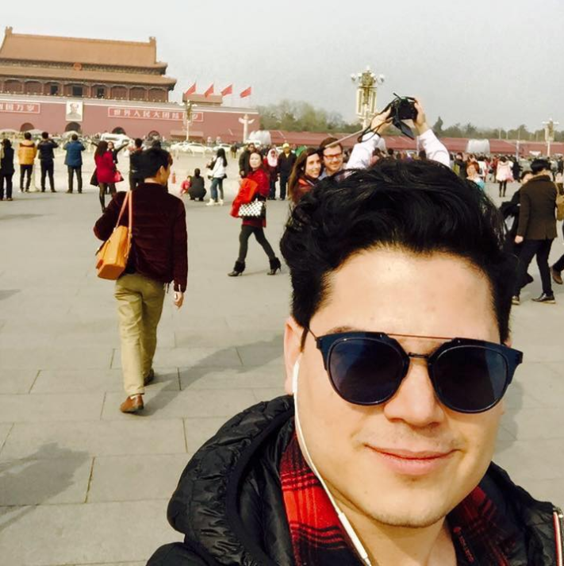

About me
Adalberto Loya (Hidalgo del Parral, Chihuahua, Mexico, March 6th 1988) Better know as Adal Loya, he is currently an operations manager at "empleolisto.com". He major on graphic desing at TecMilenio in 2013 and later finished his Masters in bussines administration at IPADE in 2015. Currently he is doing a Codebootcamp at Tecnologico De Monterrey in wish he is learning the skills necesary to take his bussines to the next level. On the personal side, he is a technology fanatic. His favorite brand and company is Apple due to the culture of the company, the desing of their products and lastly the philosophy of "making things different". His favorite hobbie is to play videogames on his nintendo switch.
Every since he was a child he developed a taste for programing , in the hopes one day programing his own videgame. He currenlty lives in Mexico City due to his current job. All his family still lives in Chihuahua and he goes to visit them a couple of times a year. He havent decide where we would like settle down yet but he loves Mexico and is considering options like Guadalajara and Merida. His current goal in life would be to learn programing and to make synergy beetween his experience in desing, bussines administration and coding. He belives that this kind of diversified experiences are the key to innovation. He wants to become an entrepreneur in the near future and help the humanity with his ideas.
Online Profiles

